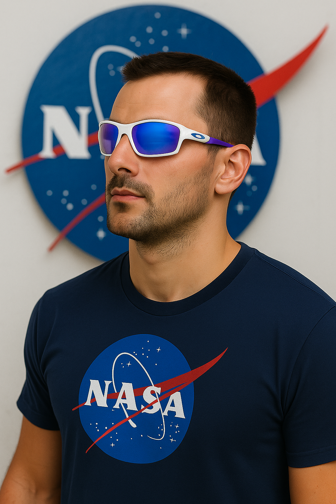
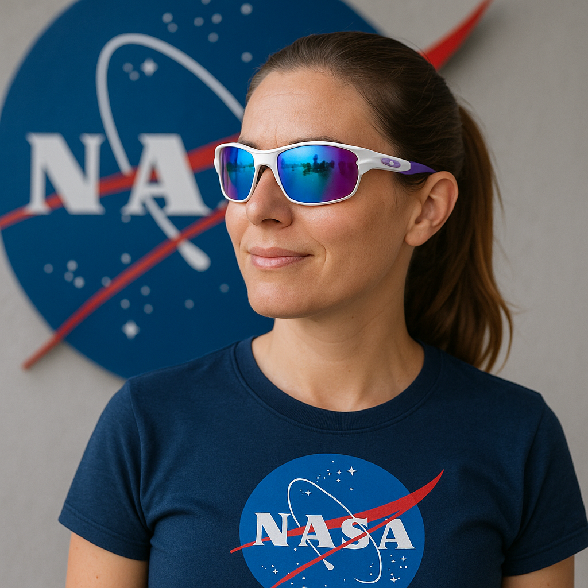

-
Safety
Excellent for every weather condition
-

UV Protection 400
Protects your eyes from harmful rays
-
NASA-tested
Durable in real spaceflight conditions


Glasses Details
| Feature | Description |
|---|---|
| Weight | Ultra-light – only 18 g (titanium composite) |
| UV Protection | UV 400 (blocks 100 % of UVA/UVB) |
| Night Vision | Built-in low-light night vision capability |
| Integrated Chatbot | On-device AI chatbot for hands-free assistance |
| AI Vision | Real-time AI-powered visual enhancements |
| Video & Photo Capture | High-definition video and photo recording |
What Customers Are Saying
“Incredibly comfortable and stylish — I wear them every day!” – Anna M.
“Perfect for the beach and the next space mission.” – Lars K.
Frequently Asked Questions
How long is the delivery time?
Standard 3–5 business days, express option available.
Money-back guarantee?
Yes, within 30 days with no questions asked.
Payment methods?
Credit card, PayPal, Apple Pay, Google Pay.